Office Bearers
Office bearers are elected by the members of the Centre and serve a two-year term. The committee below took office for 2026–2028.
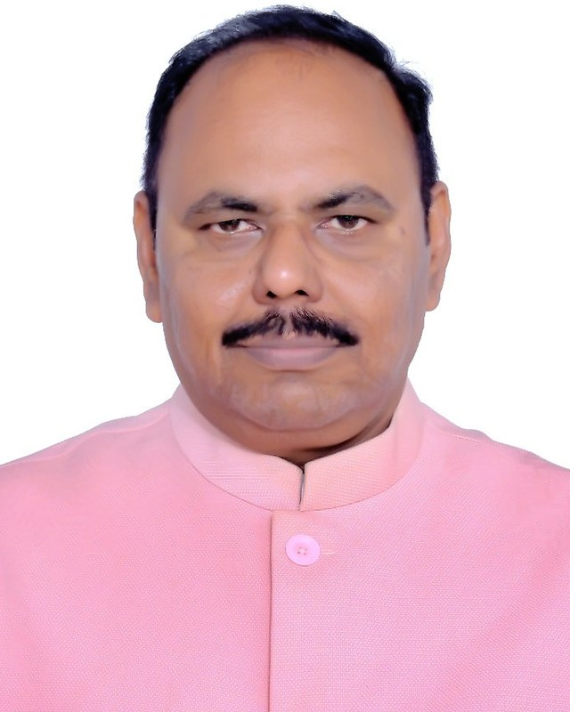
Chairman
Dr. D. Vijendra Babu
Associate Professor Grade 1, Department of Embedded Technology, School of Electronics Engineering, Vellore Institute of Technology, Vellore
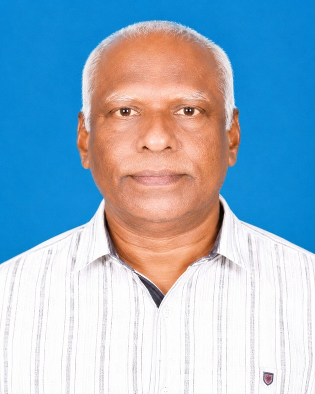
Immediate Past Chairman
Er. N. Sridharan
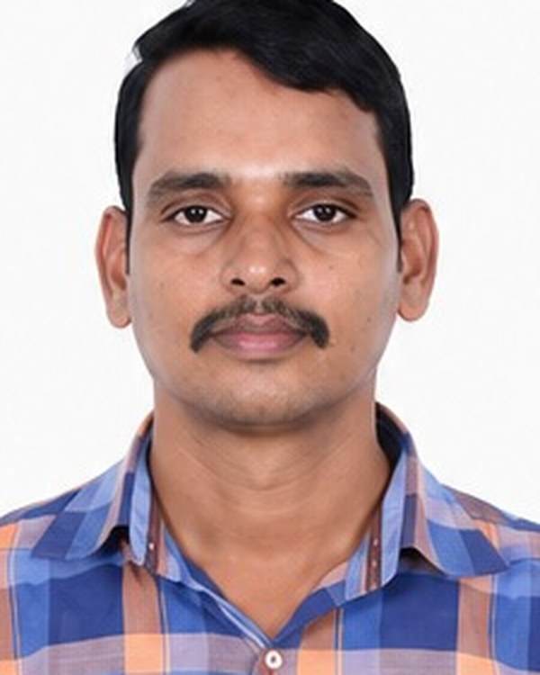
Honorary Secretary
Dr. R. Karthikeyan
Assistant Professor, Department of Electrical and Electronics Engineering, KCG College of Technology, Karapakkam, Chennai 600 097
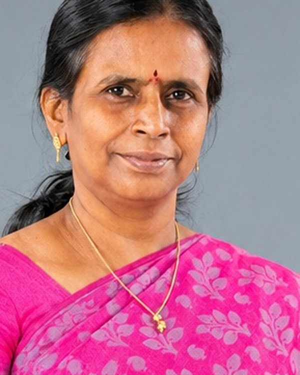
Honorary Treasurer
Dr. S. Sumathi
Professor, Department of Electronics and Communication Engineering, Sri Sairam Engineering College, Sai Leo Nagar, West Tambaram, Chennai 600 044
Executive Committee Members
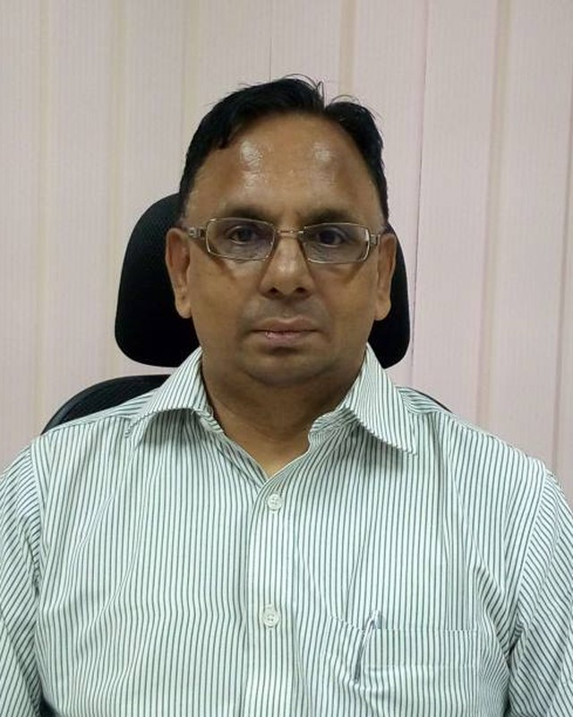
Shri. Srinivasan Ramachandran
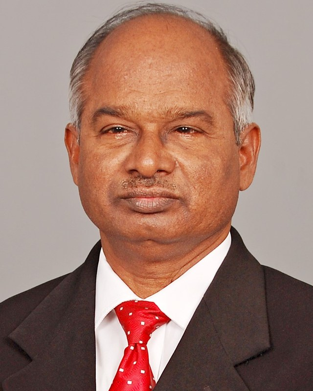
Dr. G. Pandian
Energy Consultant, AVC Project Engineers, 5th Street, Lakshmi Nagar, Velachery, Chennai 600 042
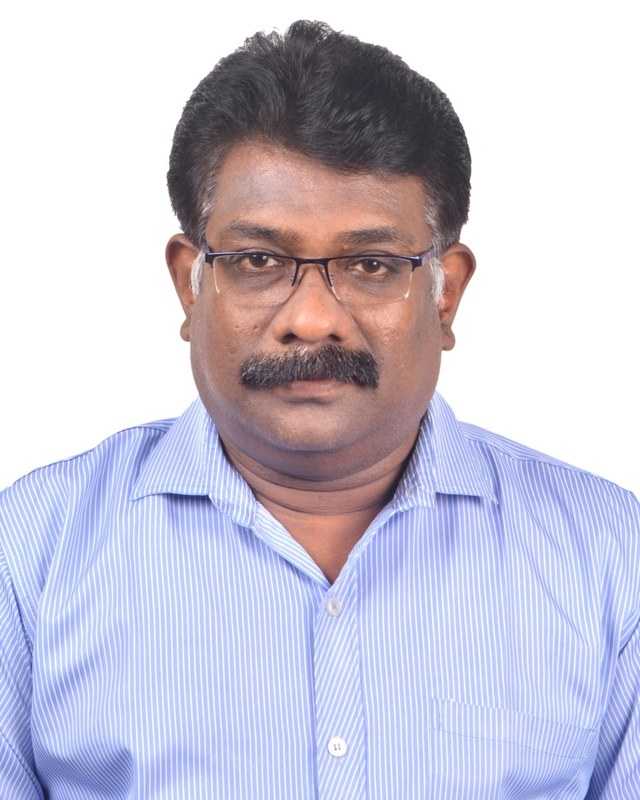
Dr. M. Murugan
Professor & Principal, SRM Valliammai Engineering College, SRM Nagar, Kattankulathur 603 203, Chengalpattu District
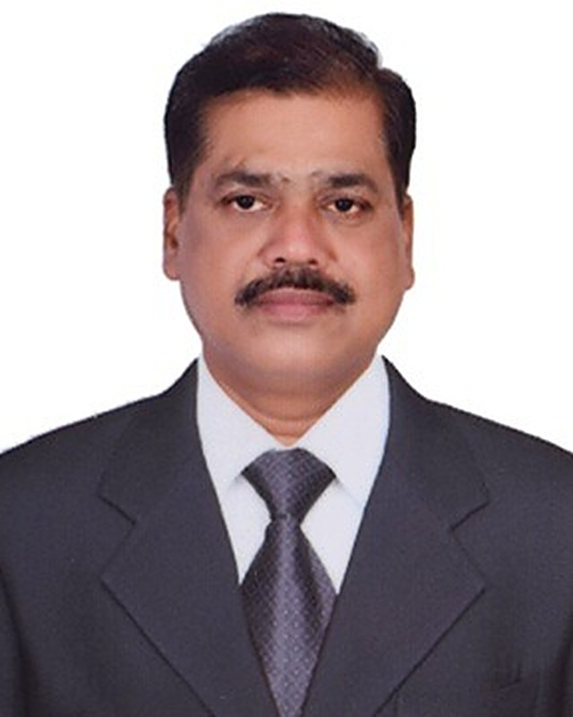
Dr. K. Seetharaman
Dean – Administration, Ranking & Accreditation, Takshashila University, Ongur Post, Tindivanam Taluk, Villupuram District 604 305
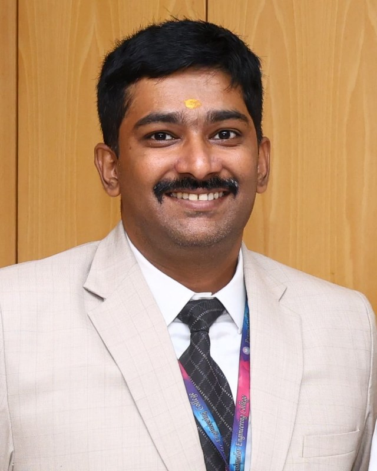
Dr. M. Arun
Assistant Professor, Department of Electronics and Communication Engineering, Panimalar Engineering College, Poonamallee, Chennai 600 123
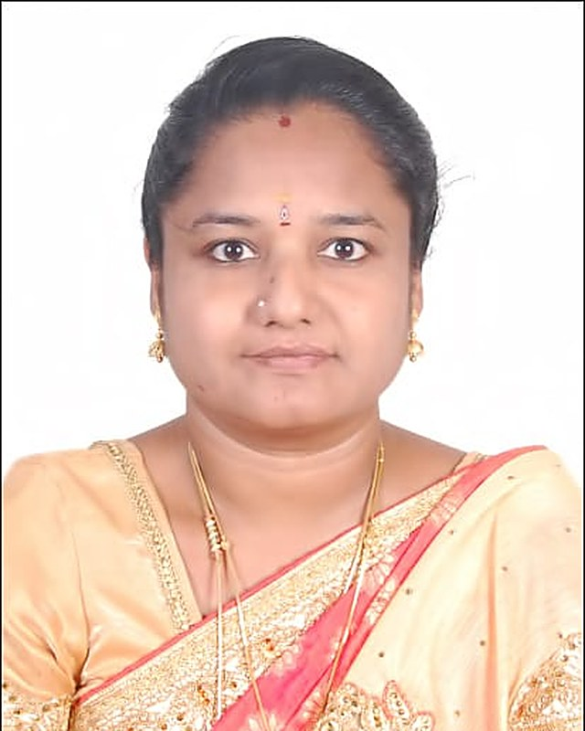
Dr. G. T. Bharathy
Associate Professor, Department of Electronics and Communication Engineering, Jerusalem College of Engineering, Pallikaranai, Chennai 600 100
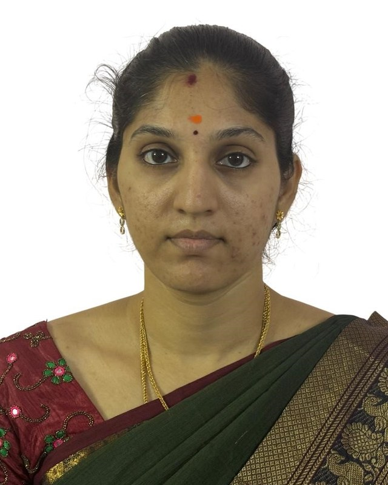
Dr. V. Vanitha
Co-opted Members
Members co-opted to the committee for their particular experience and to assist with the Centre’s programmes.
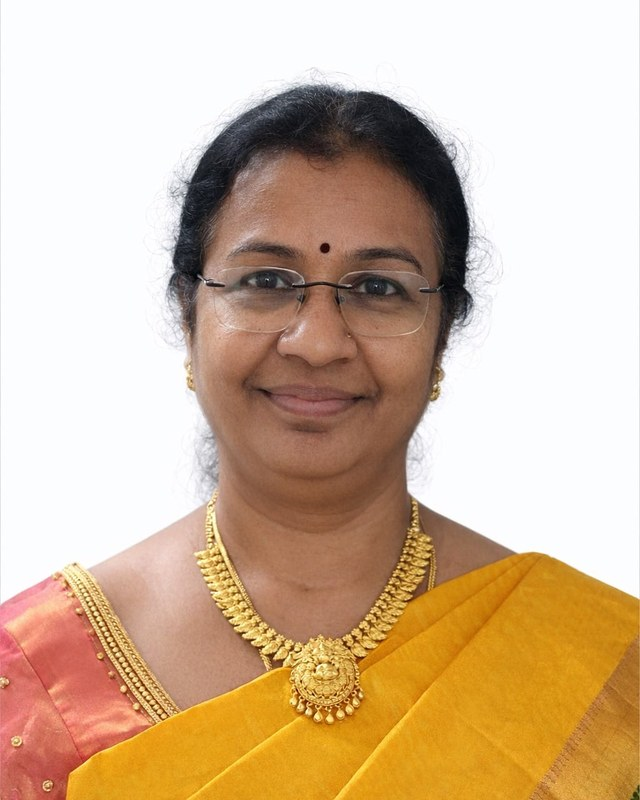
Dr. V. Thulasi Bai
Professor, Department of Electronics and Communication Engineering, KCG College of Technology, Rajiv Gandhi Salai, Karapakkam, Chennai 600 097
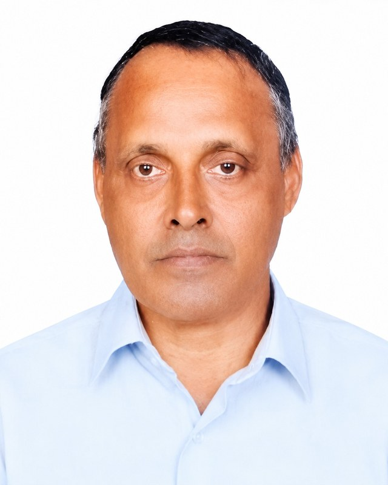
Shri. A. Sadagopan
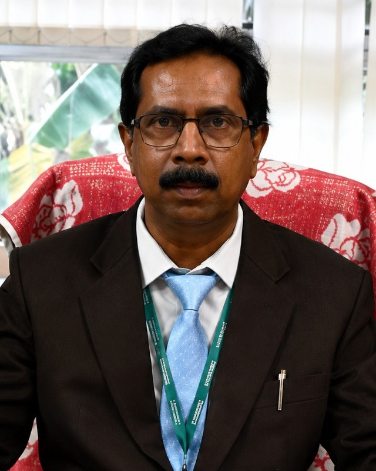
Dr. T. Suresh
Professor & Head, Department of Electronics and Communication Engineering, R.M.K. Engineering College, Kavaraipettai, Gummidipoondi Taluk, Tiruvallur District 601 206
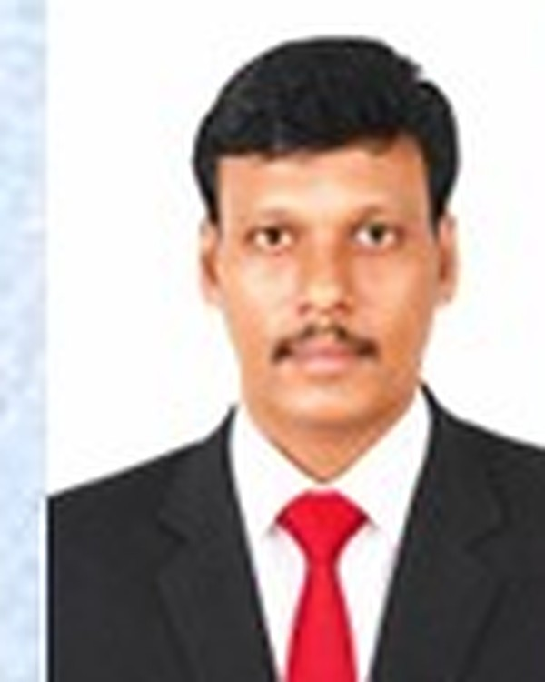
Shri. T. Perumal
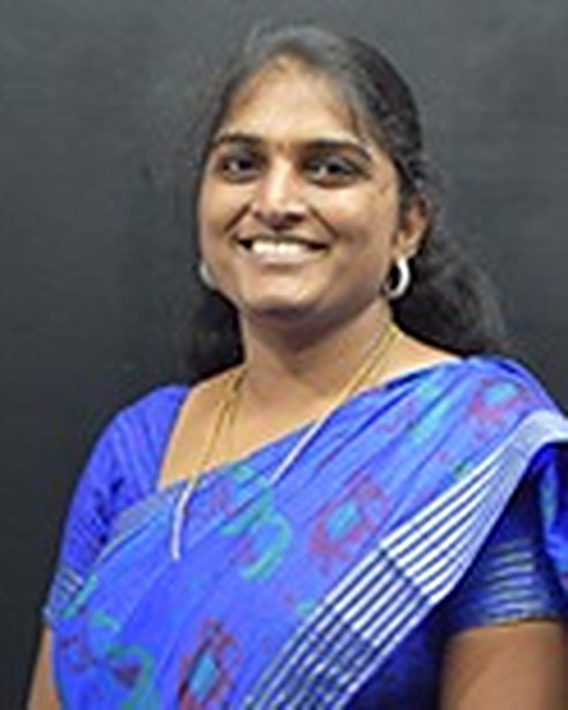
Dr. R. Anitha
Assistant Professor, Department of Electronics and Communication Engineering, GST Road, Vandalur, Chennai 600 048
Student Representatives
Student representatives carry the concerns of student members and the IETE Students’ Forums to the Executive Committee, and help the Centre run its programmes for students.
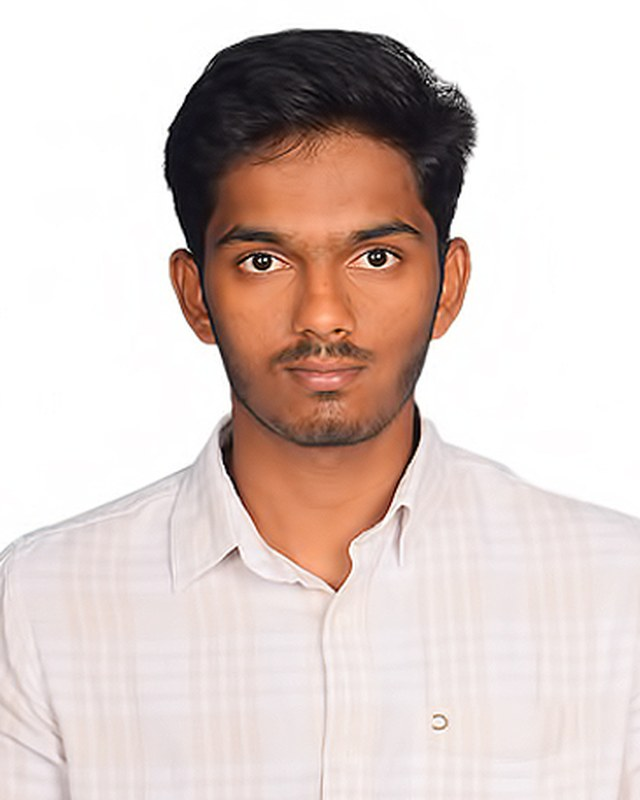
Student Representative
Nitheesh J
2025PECEC466
II Year, B.E. Electronics and Communication Engineering
Panimalar Engineering College, Chennai
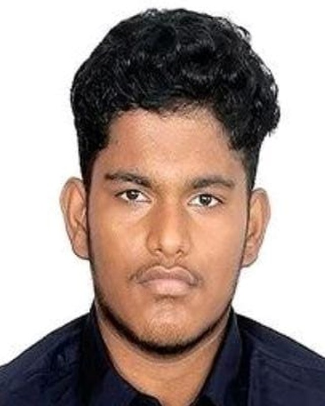
Student Representative
Sathya Narayanan B
SEC25EC323
II Year, B.E. Electronics and Communication Engineering
Sri Sairam Engineering College, Chennai
Writing to the committee
Correspondence for the Chairman, the Honorary Secretary or the Honorary Treasurer may be addressed to the Centre office at Gopalapuram, or sent by email to ietechennai@gmail.com. Proposals for talks, workshops, students’ forum activities and collaborations are welcome.